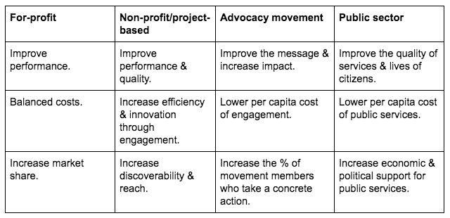
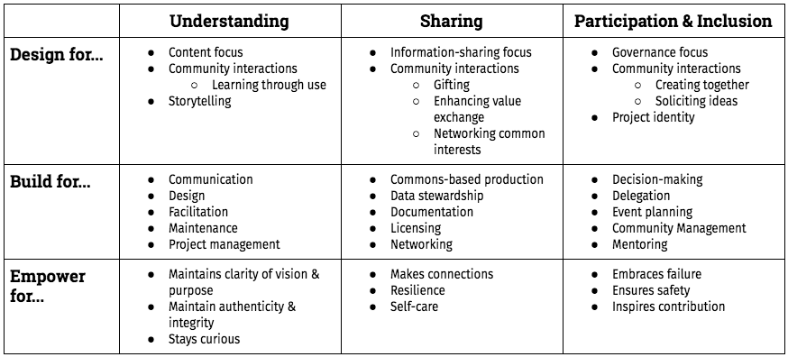
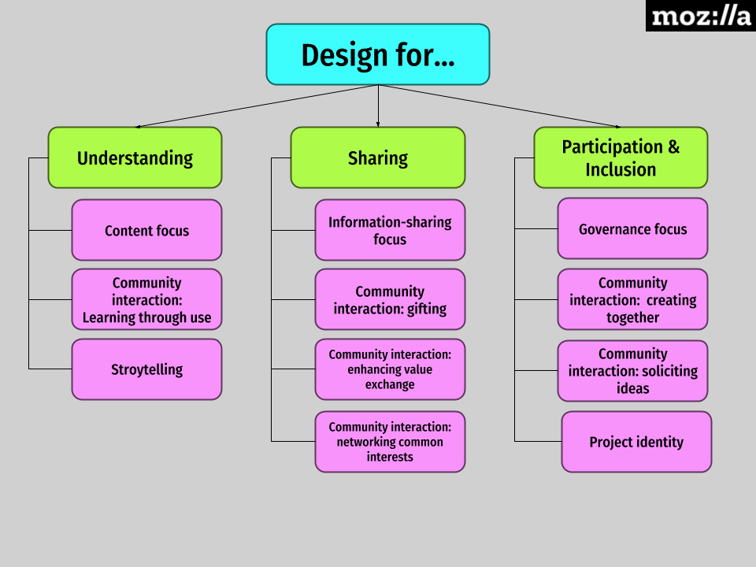
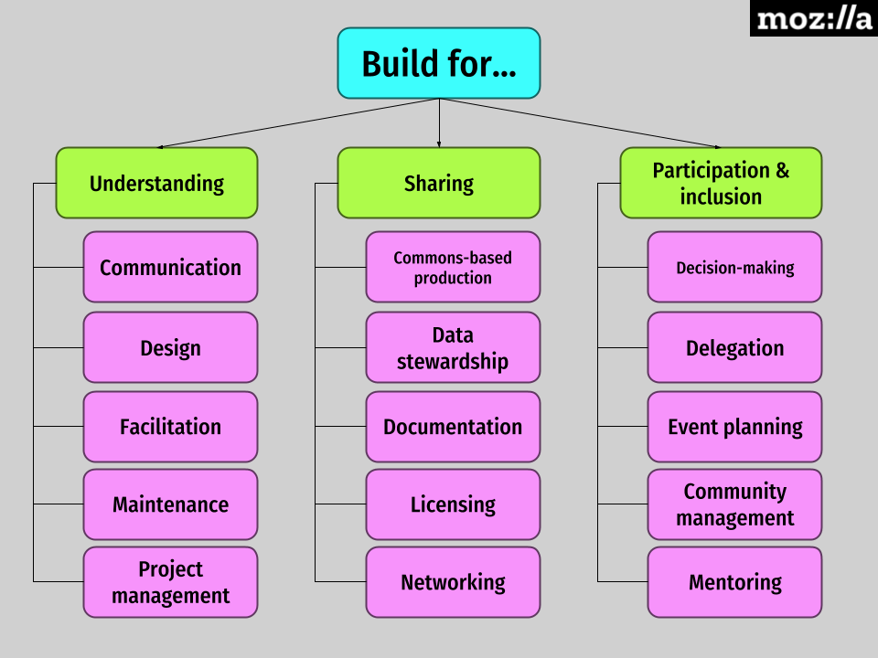
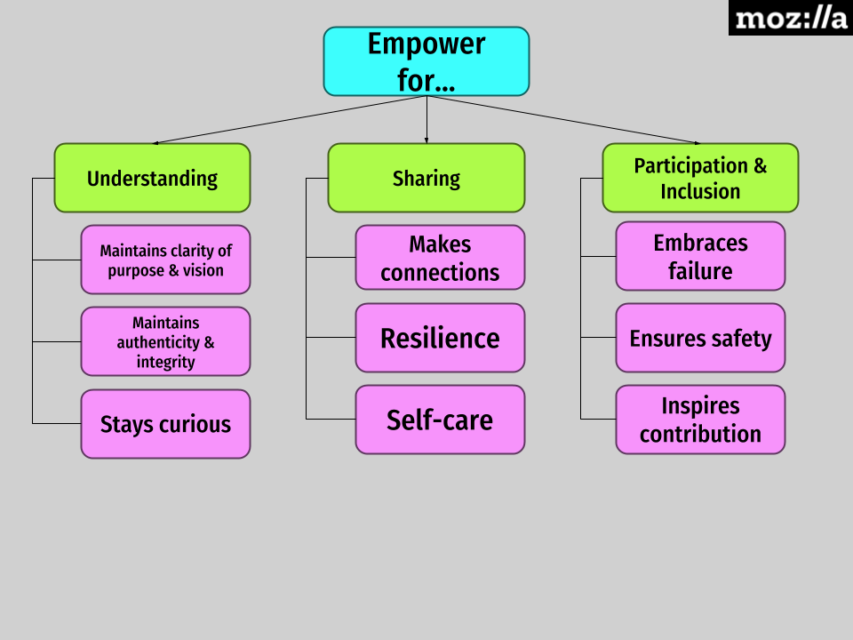
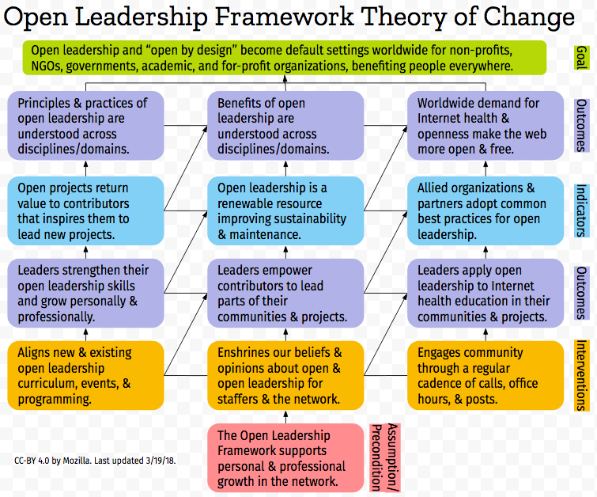

Open Leadership Framework
Open Leadership Framework
- Open Leadership Framework
- Hello & welcome!
- Who and what is this framework for?
- What is open?
- What is open leadership?
- Open leadership is not…
- How is open leadership different?
- How do individuals benefit from open leadership?
- How does open leadership benefit the user?
- The Open Leadership Framework
- Design
- Build
- Empower
- Next steps
- Works cited
- Recommended reading
- License
- Appendix A - Open Leadership Framework Theory of Change
- Appendix B - Open Leadership Framework decision log
- Appendix C - How to contribute
Hello & welcome!
Hi! We’re Mozilla, a global non-profit fueling the movement for Internet health. Our mission is to ensure the Internet is a global public resource, open and accessible to all. We work for an Internet that truly puts people first, where individuals can shape their own experience and are empowered, safe and independent.
A healthy Internet helps people live and learn online. It includes everyone in its possibilities. It belongs to the people and resists being closed off or broken apart. On a healthy Internet, we are all free to share and benefit from one another’s innovative, new ideas because of a culture of inclusivity, openness, and care. We work together there to fight harassment, engage critically with media, and help ourselves and our communities to maintain control of our own online lives.
Some big ideas connected to Internet health include:
-
Online Privacy & Security: People understand and can meaningfully control how their data is collected and used online, and trust that it’s safe. In parallel, companies and governments work to protect our data and enhance our ownership over our digital identities.
-
Open Innovation: Open is the default: open source and open standards continue to be at the heart of the Internet, and influence organizations and industries products, policies and practices. As a result, entrepreneurs and everyday Internet users can create, innovate and compete online without asking permission.
-
Decentralization: The technologies and platforms people use every day are interoperable and based on open standards. People expect and demand systems that allow seamless flow and transfer of information and content.
-
Digital Inclusion: People everywhere can access and have the opportunity to participate in building the entire Internet. Subsequently, everyone on the Internet has the opportunity to access and shape our digital world. The Internet reflects the diversity of the people who use it.
-
Web Literacy: People have the skills to read, write and participate in the digital world. Together, these informed digital citizens move beyond just consuming content, to creating, shaping and defending the web.
Think of Internet health and these big ideas as the “what” and “why” of what we do. Our commitment to these core values drives our work.
Open leadership is the “how” of our work. It’s how we accomplish our work in communities, organizations, and projects. open leadership encompases the processes and resources we use to support Internet health for everyone’s benefit.
Open leaders “work open.” They work collaboratively, sharing the ownership of ideas, resources, and outcomes with contributors, while building powerful, diverse communities to support and direct projects and organizations. They also set the conditions for others to do the same, ensuring accountability, equity, and transparency in a project and its community.
Here are some examples of how Open Leaders work on the “what” and “why” of their projects and organizations:
-
Mozilla began its life as an open-source project to create a web browser that would break corporate monopolies over the web.
-
Common Voice is Mozilla’s initiative to crowdsource a large, public dataset of human voices for use in open speech technology. By working in the open, Mozilla was able to reach a much broader group of contributors, partners, and users. Each group helped us build and guide Common Voice along the way. Making Common Voice successful largely meant facilitating the collaboration between these groups who, like us, want to see speech technology more open and accessible to all.
-
The Mozilla Developer Network (MDN) created a repository to collect and structure browser compatibility information to provide the community with open data to build cross-browser tools and websites. This was immensely successful, attracting a diverse group of dedicated contributors to help migrate data into the repo, and making it a place where a new community shares knowledge about browser compatibility.
-
In The Mozilla Italia l10n Guide, Sara Todaro uses Contributing Guidelines to outline how others can participate in the project.
-
In UofT coders, their leadership team uses the personas and pathways exercise to identify potential blockers to participation.
-
In The Method Podcast, April Clyburne-Sherin includes many different ways to submit audio to make participation as easy as possible.
-
openSNP allows customers of direct-to-customer genetic tests to publish their test results, find others with similar genetic variations, learn more about their results by getting the latest primary literature on their variations, and help scientists find new associations.
-
Jos de Block, founder of Buurtzorg in the Netherlands, created an innovative neighborhood nursing company that shares its business model freely with competitors to improve elder care for all (Laloux, 2016).
-
Nora Dashwood, COO of the Decurion Corporation, facilitates an internal, communal governance process that allows all employees to contribute insights to decision-making and participates in culture of constant feedback in which any employee can give another feedback safely, regardless of relative position (Kegan & Lahey, 2015).
-
Jim Whitehurst, CEO of RedHat, oversees an “inclusive” decision-making process that provides employees with the opportunity to weigh in on decisions that affect them and to get all the information they need to address their concerns before giving feedback. (Whitehurst, 2014).
This framework will help you understand, adapt, and use open leadership practices to further your work in the Internet health movement and beyond.
Together, we can use the principles and practices of open leadership to build a healthy Internet reflective of the society we want to see in the world. We are glad to be doing this work alongside you. Thank your for leadership and for sharing your open journey with us!
Who and what is this framework for?
This framework is for anyone who shares our passion for openness, working open, and open leadership. It is meant for readers from both technical and non-technical backgrounds who want to use open leadership as a means to improve their work, help their communities, and further their personal and professional growth.
The aim of the framework is to establish an adaptable set of open leadership principles, practices, and skills that people can use for personal and professional development as part of an open community or project. More practical resources built from this framework - like guides, curriculum, programming, and events - will come later.
The framework is meant to be a foundation for later work, and, as such, it is not meant to be a practical guide or curriculum just yet. Moreover, the framework itself will likely evolve over time as we discover more use cases for it in our work and in our wider community’s work to share open practices. While it is in some ways limiting to start with any particular set of principles and practices, we believe it’s important to share what we know and make this contribution to ongoing conversations about working open and open leadership in the world.
To put it another way: This framework is the first step of a larger, on-going project to develop curriculum, events, trainings, and online resouces like an open leadership map that will help people locate themselves and then move ahead in their open leadership journeys.
If you’re curious about the kinds of use cases we evision and plan for the framework, you can review and test these prototypes:
What is open?
Openness includes deals and practices that any kind of community, project, or organization can practice.
These three principles help define openness:
- Understanding: You make the work accessible and clear.
- Sharing: You make the work easy to adapt, reproduce, and spread.
- Participation & inclusion: You build shared ownership and agency with contributors through accountability, equity, and transparency to make the work inviting, relevant, safe, and sustainable for all.
We believe that it is important to work intentionally and mindfully towards Understanding. Here, understanding means not only being accessible, but also being transparent in how a community or project is structured, how it makes decisions and does it work, and how it shares that work and news about it with contributors and users.
We beieve that it is important to ensure the sharing of an open community or project. The value of openness comes in large part from how it empowers others to adapt and continue the work they contrbiuted to for their own uses and the uses of their networks and communities outside any original project.
We believe that any efforts a community. leader, or project makes towards inclusion must include authentic, significant, and valuable opportunities for participation, contribution and leadership. To make that belief an explicit part of the framework and its design, we paired participation & inclusion.
At its core, being “open” is about structuring any project or organization, technical or not, to invite the widest possible diversity of contributors from outside your organization’s boundaries. Who are contributors? People who give time, expertise, and labor to a project. A project that supports diverse contributors creates an inclusive community of people working together because of the interests and passions they share. That community includes new “insiders” who may have once felt like they were “outsiders” - people outside of a community, organization, or project’s notional boundaries who join a project because of shared expertise, interests, and passions.
Some projects need specific skill sets and define more narrow contribution pathways. There’s a tension in such projects between aspirations of inclusivity and the details of the project. Open leaders strive to collaborate with their communities to imagine and make concrete as many authentic, valuable opportunities as possible for potential participants.
Open projects also return value to their contributors to compensate them somehow for their work. Open practices like shared decision-making, conflict-resolution, and mentorship help people feel welcome, safe, and inspired.
Furthermore, when a project is fully open it invites contributions from anyone. Open projects share their processes, workflows, and outcomes through accessible platforms and open licensing. This kind of sharing is what we traditionally mean when we talk about an open project. It maximizes impact by clearing some obstacles, like cost, out of your users’ way. It also encourages and incentivizes adoption by letting users change and build off your work to better suit their needs, amplifying the usefulness and reach of your project through new and unexpected user-generated outcomes.
Leads and contributors can also open projects that are not only or essentially technical in nature. Projects that serve the public good through educational programming or other forms of activism can be open, as well.
The altruism and idealism of openness connect people to one another through projects and organizations that invite them to build together for social good.
However, not every open project or organization is fully open. Requiring a project or organization to open everything all the time would be a high barrier to entry. The Open Leadership Framework (shared below) is meant to help you think intentionally and strategically about when, how, and why to work open according to the needs of your contributors and community, whether they’re employees or volunteers, and whether you’re part of a fully open, community-serving social enterprise, non-profit, or research project or something else, like a for-profit company. The big idea is to discover how you can lead your project or organization to be more open, inclusive, and effective in making a difference in your contributors’ lives and in the world through increasingly open practices. Our intent is to help you, your community, and your project be “open by design,” not only “open by default.”
What is open leadership?
We think of Open Leadership as a set of principles, practices, and skills people can use to mobilize their communities to solve shared problems and achieve shared goals. The leadership part comes from mobilizing communities to solve problems and achieve goals. What makes open leadership “open,” however, is the way that it shares roles and responsibilities for decision-making, content-creation, and information-sharing across a project or community. Open leaders develop the systems and workflows that make their projects successful with the input and participation of volunteer contributors and users who draw value from being able to freely access, adapt, and change those projects for their own needs and the needs of their communities.
Open Leaders design, build, and empower contribution pathways, projects and organizations to promote openness and social good throughout their work and across society. They design, build, and empower for understanding, sharing, and participation and inclusion, the key principles of openness.
- Design: You plan projects for contributors and users’ specific needs and capacities.
- Build: You create systems and solutions that maximize a project’s clarity, usability, and inclusiveness.
- Empower: You help contributors own the work through transparency, accountability, and shared decision-making.
The skills, competencies, and outcomes of open leadership can help you mobilize your community, think strategically about how to advance its work through open practices, and develop your own personal leadership style that inspires contribution and models openness.
The benefits of open leadership include improving the quality of your work, increasing its efficiency and innovation, lowering its costs, and increasing its discoverability and reach in the world (Klepel, 2017). The Hive Research Lab affirms that working open leads to improved projects, greater efficiency, increased discoverability, and a stronger public commons (Santo, Ching, Peppler & Hoadley, 2014).
These goals and their strategic benefits might look slightly different across contexts.
For example, different types of organizations might realize these benefits slightly differently.

Across contexts, open leadership is facilitative and service-oriented in that it helps communities of contributors and users create relevant, functional solutions to personally and collectively meaningful problems through shared accountability, agency, decision-making, ownership, and responsibility.
Of course, these benefits come with costs. It takes time and effort to open a closed project, to resolve conflicts, and to make decisions that stay true to openness. It takes time to design, test, and improve systems. There aren’t shortcuts to accountability, equity, and transparency. Being open often means being messy. Sometimes it feels like a project is getting worse - like there are more issues and tensions to resolve than ever - before it gets better. Openness uncovers what your project and its community need to work on in terms of creating authentic, shared ownership of the work. You can only realize the benefits of this approach through a sustained commitment to a project, its people, and open principles.
Open leaders follow these principles and use these practices and skills to ensure that a project and its contributors will succeed without them. They share accountability, authority, and power with their communities to focus relentlessly on users’ needs and how contributors can best meet them.
Agency, equity, and ownership of the work and its outcomes are distributed and decentralized in open projects to maximize their reach, relevance, and sustainability.
Right now, you may be working on a closed project that you’d like to open, or you might be working on a project that practices a kind of constant, “shout it from the rooftops” kind of open (Thompson, 2011). At any point in your open leadership journey, this guide and the Open Leadership Framework are meant to help you reflect on your work, share what you do with others, and take your next step to grow as a leader.
Shortly, we’ll take a closer look at how designing, building, and empowering for understanding, sharing, and participation & inclusion break down into specific skills and competencies below.
Open leadership is not…
Let’s pause for a moment and clear up a few common misconceptions about open leadership before we look at the Open Leadership Framework.
Open Leadership is not (Thompson, 2011):
- A way to get free labor.
- A way to avoid process or structure.
- A way to hit your deadline faster.
Instead, open leadership requires you to:
- Clearly communicate the goals of your project and the value of working on your project.
- Create robust, transparent systems for content development, governance, and information-sharing.
- Test and revise your work until it meets your community’s needs.
It takes rigor to practice open leadership and your contributors and communities will hold you accountable for maintaining the openness of your shared work.
How is open leadership different?
In many ways, open leadership is like other forms of good or effective leadership. The best leaders find ways to empower people through work, recognition, and experiences that speak to individual and collective needs in fulfilling ways.
However, open leaders hold themselves accountable to a wider audience of contributors and users than traditional leaders do. They:
- Locate agency, ownership, and recognition within their communities of contributors and users, not only within themselves. Their power is the ability to give away power. They share authority and decision-making, delegate responsibilities, and mentor community members to the point of their own obsolescence.
- Help change systems in response to contributors and users’ needs. Rather than always follow a single approach, they commit to a larger, encompassing, meta-framework that ensures accountability and transparency in whatever systems they create, adopt, or adapt with their communities.
- Carry a responsibility to share governance, content-creation, and information equitably between themselves and contributors who may be volunteers, rather than staffers, from a variety of professional and local contexts.
- Open their projects to the widest possible diversity of contributors which requires especially mindful matchmaking, mentoring, and community management.
- Depend on others to help lead their communities asynchronously, across cultures, geographies, and time zones.
- Consciously choose to follow the principles, practices, and skills of working open and open leadership as their particular pathway to good, effective, or even great leadership. They design, build, and empower their projects and communities for understanding, sharing, and participation and inclusion. They use these principles and practices to hold themselves accountable to their contributors and users’ feedback and needs in dynamic, transparent ways.
Open leaders are experts in helping each project meet its community’s needs. They help others see openness as the abundant presence of the systems and people they need to succeed.
How do individuals benefit from open leadership?
Contributing to an open community or project can be an altruistic act, but such contributions also carry benefit for the individual.
Open leaders empower others to become open leaders in their own right. By inviting others to collaborate, open leaders continue their own personal and professional leadership development and find trusted contributors to whom they can delegate work and offer mentorship for project sustainability and maintenance and for the overall health of the open movement.
Contributors can benefit from the same kind of intrinsic personal and professional development as they assume more responsibility in a project and receive mentorship from other leaders in their project communities. They can also draw other kinds of extrinsic value from a project such as social capital within their professional networks, a forkable version of a project they can use in their own lives or within their networks, and any other specific benefits offered by a project or its community.
Open leaders work to make the value exchanges between themselves, their projects, and their contributors transparent and mutually and equitably beneficial.
How does open leadership benefit the user?
Just as the structure of an open project or community is meant to empower its contributors, the outcome or product of an open project is meant to empower its users. Users should be able to use, study, share, and adapt an open project just as contributors do. Users should have agency and ownership over the deliverable of an open project for their own uses. This ability to interact with the outcome of an open project helps invite users to become contributors, leaders, and innovators in their own rights as they adapt and localize products for their own needs and the needs of their communities.
Everything an open leader does is meant to help contributors understand their users’ needs and take them into account during each step of a project. From this perspective, leaders and contributors work together to design and build projects that empower users and create social good.
The ultimate goal of open leadership is to develop communities of practice full of leaders and contributors who educate and empower users with open alternatives to black-box products and products, services, and technologies that exploit them. It’s not that an open project can’t be profitable or collect data, it’s that open projects have clear and equitable value exchanges between their creators and users. Open leaders hold themselves accountable for transparency in the relationships between projects, their contributors, and their users in ways that closed, strictly for-profit organizations and leaders do not.
That commitment to making sure that users understand and benefit from a clear and balanced value exchange differentiates open leadership from other forms of good or effective leadership.
The Open Leadership Framework
Open leadership is a set of practices and skills people can use to mobilize their communities to solve shared problems and achieve shared goals.
To put it another way, open leaders design and build projects that empower people to collaborate within inclusive communities.
Open leaders are guided by open principles. They strive for:
- Understanding: They make the work accessible and clear.
- Sharing: They make the work easy to adapt, reproduce, and spread.
- Participation & inclusion: They make the work inviting, relevant, and safe for all.
To apply these principles, open leaders take these practices. They:
- Design: They make contextual, deliberate decisions about how and when to be open.
- Build: They create structures, and systems that ensure clarity and process-based management.
- Empower: They model personal leadership skills that sustain them and their contributors.
As a result, open leaders and their communities, organizations, and projects work towards these objectives. They help their communities, organizations, and projects:
- Improve the efficiency, quality, and relevance of their work.
- Discover new, innovative solutions that make sense to them.
- Increase the discoverability, reach, lifespan and usefulness of their work.
Not every community, organization, or project works towards all of those objectives, principles, or actions at once. Instead, open leaders work with their contributors - the people who give their time, talent, and expertise to a project - to focus on the elements that will help them achieve shared goals. For example, a local project might first work to improve efficiency, quality, and relevance. Later, it might share more to increase the discoverability, reach, lifespan and usefulness of its work. Then another community could discover new, innovative solutions localized for them.
This Open Leadership Framework suggests areas of focus you can concentrate on during your open leadership journey to achieve these goals. To use the framework, consider your objective(s) and look at the principles, actions, and embedded skills that might best help you reach your goals.

We’ll dive into each section of the framework below.
A quick note: we’ve borrowed a list of 6 “community interactions” from Mozilla’s Open Innovation Strategy Team and grouped them with particular practices below. Each type of interaction carries its own range of activities. For example, “soliciting ideas” might amount to crowdsourcing ideas from a community of users without offering much value in return, or it might mean bringing in a group of users who first contribute their ideas and then get invited to work on them as credited developers during a “creating together” interaction later in the same project. Open leaders choose these interaction types strategically for particular projects and stages of projects, but they also strategically decide on and define levels of interaction within each type.
Design
These are the strategic prompts open leaders use to set goals and determine the levels of openness their projects will have in terms of operations and interactions with their communities. This is how Open Leaders decide what to share, how to share it, and why to share it that way. Open leaders use the skills and practices of design to boost the quality of their work and extend its reach.

When you design, you remain open to:
- Questioning when, how, and why you bring openness to each part of your project or organization in an intentional, strategic way that informs how you build things and empower people for maximum impact.
- Evaluating the most inclusive, efficient levels of openness for content development, governance (or decision-making), and information-sharing for your project or organization to reach as many people as possible with the highest quality work you have to share.
- Determining how best to interact with contributors and community members to fuel participation and innovation without exploiting others under cover of openness (Klepel, 2017).
As you develop your open leadership practice, you should begin to think about:
- How to align the management practices of build with the strategic decisions you make.
- How to develop the personal leadership skills from empower that can help you share ownership of strategic decisions with contributors.
A breakdown of each section follows.
Design for Understanding
- Content focus
- Defines and manages the openness of core content like products and services.
- Community interaction: learning through use
- Strategically structures community engagement opportunities to generate data and feedback that can be used to improve the work.
- Storytelling
- Develops case studies, examples, and stories that engage contributors and users by illustrating the need for a project, its vision, and its goals or outcomes.
Design for Sharing
- Information-sharing focus
- Strategically manages the openness of information sharing between the project or organization and external communities.
- Community interaction: gifting
- Strategically structures community engagement opportunities to encourage adoption and use by sharing information and content freely.
- Community interaction: enhancing value exchange
- Strategically structures community engagement opportunities to encourage adoption and use by recognizing the value of contributions and compensating contributors in ways they value for their work.
- Community interaction: networking common interests
- Strategically structures community engagement opportunities to encourage adoption and use by connecting people, communities, and networks demonstrating passionate for the work.
Design for Participation & Inclusion
- Governance focus
- Strategically manages the openness of governance and decision-making processes within the project or organization.
- Community interaction: creating together
- Strategically structures community engagement opportunities to encourage adoption and use by inviting process-based co-creation of information and content through contributions and shared decision-making.
- Community interaction: soliciting ideas
- Strategically structures community engagement opportunities to encourage adoption and use by researching community needs.
- Project identity
- Creates formal and informal opportunities for contributors and other project participants to see one another as both whole people and as part of a team serving users through their work.
Build
These are the concrete principles, skills, and competencies Open Leaders need to structure and manage projects and communities. This is how Open Leaders define a project and establish its guidelines and workflow.

When you build your project or organization, you remain open to:
- Communicating in a way that makes the goals and processes of your project or organization as clear as possible to potential contributors and communities of practice.
- Evaluating and adopting the open practices, platforms and tools that will extend and sustain your project’s reach.
- Implementing the most inclusive community-management practices and structures you and your contributors devise together to share power and decision-making across the project or organization.
As you develop your open leadership practice, you should begin to think about:
- How to employ these principles, competencies, and skills in increasingly intentional and strategic ways that complement the your goals, operational decisions, and community interactions from design.
- How to enact these principles, competencies, and skills in ways that foster openness and fuel stakeholders’ capacity and passion for the work using personal leadership practices from empower.
A breakdown of each build sections follows.
Build for Understanding
- Communication
- Drafts key project documentation using clear, concise language.
- Edits to remove jargon and narrow colloquialisms.
- Reviews communications with critical readers before sending.
- Design
- Practices human-centered design throughout the project.
- Designs to maximize participation, diversity, and inclusivity.
- Frequently tests assumptions, systems, and products to get feedback and learn from it.
- Facilitation
- Assesses communities’ learning needs and teaches to them.
- Connects contributors with relevant work that matches their capacities.
- Establishes clear, equitable systems for recognition, reviewing decisions, and conflict resolution.
- Maintenance
- Plans for the long-term maintenance of key systems and products coming from the project.
- Relinquishes long-term control of projects to their communities.
- Evaluates the sustainability of projects and plans to maintain or end them appropriately.
- Project Management
- Co-creates and shares roadframeworkping and milestones.
- Models clear and effective writing for project bugs and issues.
- Delegates appropriately and supports contributors in their work.
Build for Sharing
- Commons-based Production
- Evaluates online platforms for sharing project content, documentation, and comms.
- Sets internal and external levels of openness that meet community needs.
- Ensures the online accessibility and adaptability of the project for use by others.
- Data Stewardship
- Establishes clear data policies that collect as little personal data as possible and protect community members’ privacy.
- Shares non-personal and/or anonymized data openly and appropriately to benefit the community and other people and projects.
- Reviews contributions to make sure they are in alignment with data policies and practice.
- Documentation
- Creates comms channels in places community members already use.
- Minimizes the number of comms sent to community members and maximizes the usefulness of their content.
- Uses back channels appropriately to protect certain comms, but not to gossip or hide information unnecessarily.
- Licensing
- Licenses work openly to credit contributors and benefit the community.
- Evaluates open licenses to find the best fit for each project or the community or organization.
- Champions open licenses to allies and partners to strengthen the community.
- Networking
- Creates partnerships with allied organizations to share and benefit from open content and systems.
- Makes it easy for community members within the project and across projects to rally around shared issues and values.
- Connects leaders to one another and connects with other leaders to share resources and combine efforts for social change aligned with shared issues and values.
Build for Participation & Inclusion
- Community Management
- Stays aware of conversations and challenges happening across the community.
- Creates value for contributors and makes sure that their voices are heard in the project.
- Models appropriate behavior across the community.
- Decision-making
- Co-creates and sticks to a system for shared-decision making that benefits the project and its community.
- Ensures that the decision-making process is inclusive.
- Ensures that systems are in place for reviewing and change past decisions.
- Delegation
- Matches contributors with tasks at which they can succeed.
- Creates trust and space for contributors to take on new responsibilities and tasks without micro-management.
- Stays aware of contributors’ challenges and steps in with support as needed.
- Event Planning
- Finds opportunities for community members to come together online and off to work synchronously.
- Credits and shares contributors’ successes across the project.
- Rallies contributors to fix bugs, build new features, and continuously improve the project.
- Mentorship
- Stays aware of contributors’ progress and growth throughout the project.
- Matches specific advice to contributors’ specific needs for growth and helps contributors network for personal and professional growth.
- Drafts and shares documentation and FAQs about recurring questions and challenges.
Empower
These are personal leadership competencies and skills Open Leaders use to share capacity, passion, and power within and across projects, organizations, communities, and networks. This is how Open Leaders manage themselves to spread vision, passion, projects and openness.

When you empower others, you remain open to:
- Addressing your own blind-spots.
- Listening to criticism (even when it’s about you) and growing from it.
- Using feedback (even from failures) to improve the work.
- Balancing competing tensions in a project that drive innovation and progress.
- Sharing and addressing your own vulnerabilities.
As you develop your open leadership practice, you should begin to think about:
- How your personal leadership style empowers colleagues and contributors to realize the benefits of working open through the decision-making processes of design.
- How your personal leadership skills combine with core open practices from build and design to inspire people across projects, organizations, networks, communities, and society.
Empowering contributors to be open leaders in their own right helps ensure the sustainability and maintenance of a project, creates opportunities for succession planning in open communities and projects, and helps make openness a renewable resource across communities of practice.
A breakdown of each section follows.
Empower for Understanding
- Maintains authenticity & integrity
- Consistently behaves equitably, humanely, and in alignment with the culture, vision, goals, and outcomes of the project or organization.
- Maintains clarity of purpose & vision
- Aligns their behavior and speech with the goals, needs, and outcomes of their project or organization.
- Stays curious
- Remains willing to interrogate and adjust the structure and workflow of a project or organization in order to optimize them for shared success.
Empower for Sharing
- Makes connections
- Deliberately networks ideas, people, and products to create value and spark collaboration.
- Resilience
- Acknowledges and responds constructively to challenges, failure, and stressors.
- Self-care
- Adopts practices to sustain and periodically restore personal passion and capacity for the work of their project or organization.
Empower for Participation & Inclusion
- Embraces failure
- Experiments with new approaches, learn from mistakes, and revise assumptions, goals, and practices moving ahead.
- Ensures safety
- Protects others’ physical and psychological safety so everyone can bring their whole selves and full passion to the project or organization.
- Inspires contributions
- Intentionally creates and communicates individual and collective opportunities that draw contributions from a diversity of stakeholders.
Next steps
This framework is a starting place meant to help us better define and practice open leadership across Mozilla, the movement for Internet health, and society as a whole. It should prompt discussion and inspire adaptations, challenges, questions, and improvements.
As we iterate the Open Leadership Framework and curriculum, experiences, and assessments informed by it, we’ll look to the Mozilla community to let us know what works, what doesn’t work, and what we should change.
Please let us know what you think of this framework and how you’re using it by contacting Mozilla’s open leadership team. You can email project lead Chad Sansing directly or leave questions, comments, and suggestion on the Google Drive or GitHub versions of this document.
Finally, if you’d like to get a sense of how open leadership looks across the Mozilla network or to participate in Mozilla’s open leadership programming, please consider the following.
To learn more about open leadership, visit…
- The works cited and recommended readings below.
- Mozilla and Working Open. Learn about Mozilla’s history and its commitment to the open web.
- Participation Basics. Learn about what it means to contribute to an open project.
To learn more about open projects across the network, visit…
- Mozilla Pulse. Track open projects in real-time with this community bulletin-board.
To learn more about practicing open leadership, visit…
- Our online mentorship program.. Join a cohort of open project leaders receiving mentorship from past graudates and members of Mozilla’s open leadership & Events team.
- Open Leadership 101. Try this light-touch, online introductory course to working open.
- Open Leadership Training Series (OLTS). Try this in-depth, self-paced curriculum designed to help you develop and document an open project.
To join an open leadership event, visit…
- Global Sprint. Check back often to submit a project for the next Global Sprint, a 2-day celebration of open projects and contributors from around the world.
- MozFest. Join us this October in London for our annual celebration of the Mozilla Network and the open projects its community members lead, support, and inspire.
Thank you for your leadership. We can’t wait to see what we might build together!
Works cited
- Li, Charlene. Open Leadership. Jossey-Bass, 2010.
- Kegan, Robert & Lahey, Lisa Laskow. An Everyone Culture. Harvard Business Review Press, 2016.
- Klepel, Alex. “A Framework of Open Practices.” https://medium.com/mozilla-open-innovation/a-framework-of-open-practices-9a17fe1645a3. 16 October 2017.
- Laloux, Frederic. Reinventing Organizations. Nelson Parker, 2014.
- Santo, Rafi, Ching, Dixie, Peppler, Kylie & Hoadley, Chris. “What does it mean to ‘Work Open’ in Hive NYC? A Vision for Collective Organizational Learning.” Hive research Lab, 2014.
- Schmidt, Philipp. “Open Leadership Camp.” https://medium.com/mit-media-lab/open-leadership-camp-484da9cb52c5. 20 July 2017.
- Surman, Mark. Interview by Chad Sansing. Vidyo, n.d. 19 July 2017.
- Thompson, Matt. “How to Work Open.” 6 Apr 2011. https://openmatt.org/2011/04/06/how-to-work-open/. 7 Aug 2017.
- Thompson, Matt. “Re: Openness chat.” Message to Chad Sansing. 3 Aug 2017. Email.
- Whitehurst, Jim. The Open Organization. Harvard Business Review Press, 2015.
Recommended reading
- Abrahamson, Shaun, Ryder, Peter, & Unterberg, Bastian. Crowdstorm: The Future of Innovation, Ideas, and Problem Solving. John Wiley & Sons, 2013.
- Belshaw, Doug. “How to build an architecture of participation.” https://dougbelshaw.com/blog/2017/03/09/build-architecture-participation/. 9 March 2017.
- Belshaw, Doug. “Towards an architecture of participation for episodic volunteering.” http://dougbelshaw.com/blog/2014/10/10/episodic-volunteering. 10 October 2014.
- Benkler, Yochai. The Wealth of Networks. Yale University Press, 2006.
- Catmull, Ed & Wallace, Amy. Creativity, Inc. Transworld Publishers Limited, 2014.
- Dreeke, Robin & Stauth, Cameron. Code of Trust. St. Martin’s Press, 2017.
- Finch, Patrick. “What’s Your Open Source Strategy? Here Are 10 Answers…” https://medium.com/mozilla-open-innovation/whats-your-open-source-strategy-here-are-10-answers-383221b3f9d3. 16 May 2018.
- Hilliger, Laura. “Open Fluency.” http://www.laurahilliger.com/models/open-fluency/. 7 April 2015.
- Irwin, Emma. “Participation Leadership Framework 0.1.” http://tiptoes.ca/participation-leadership-framework-01/. 28 August 2015.
- Klepel, Alex. “Being Open by Design.” https://medium.com/mozilla-open-innovation/being-open-by-design-deec6768706. 8 September 2017.
- Open Innovation Strategy Project Team. Open By Design. Mozilla. July, 2017.
- Open Organization Leadership Manual. https://opensource.com/open-organization/resources/leaders-manual. July 2017.
- Pomerantz, Jeffrey & Peek, Robin. “Fifty Shades of Open.” First Monday. http://firstmonday.org/article/view/6360/5460. 2 May 2016.
- Resnick, Mitchel. Lifelong Kindergarten. MIT Press, 2017.
- Rollenhagen, Kallie. “Necessary, Not just Nice: Purpose, Delight, and Wonder.” https://rockwoodleadership.org/guest-post-necessary-not-just-nice-purpose-delight-and-wonder/. 1 June 2018.
- Santo, Raphael Joshua. Working Open in the Hive: How Informal Learning Organizations Learn, Collaborate, and Innovate in Networks. Diss. Indiana University, 2017. https://drive.google.com/drive/folders/0B0RBD2BW-srIbW53NHFZSUQ4a0k. 7 Aug 2017.
- Scott, Kim Malone. Radical Candor. St. Martin’s Press, 2017.
- The Open Organization Ambassadors at Opensource.com. “The Open Organization Definition.” https://github.com/open-organization-ambassadors/open-org-definition/blob/master/open_org_definition.md. April 2017.
- The Open Organization Ambassadors at Opensource.com. “The Open Organization Maturity Model.” https://opensource.com/open-organization/resources/open-org-maturity-model. July 2017.
- Thompson, Matt. “Listening on the edges.” https://workopen.org/listening-to-the-edges/. 11 September, 2017.
License
The content of this framework is licensed CC BY 4.0 by Mozilla. Last updated 8/14/18.
Appendix A - Open Leadership Framework Theory of Change

Appendix B - Open Leadership Framework decision log
If you are curious about how we arrived at different terms, definitions, and models, please review this decision log (also in the repo as decision-log.md).
Appendix C - How to contribute
- Comment on this Google Doc.
- File issues on GitHub.
- Follow this series of weeknotes, or weekly updates, about the project.
- Email Chad Sansing.
- Join us for office hours or a community call.
- Follow this weeknote series here or by subscribing to the Work Open, Lead Open newsletter.
- Test a prototype use case.